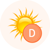
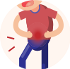

精准瘦身基因检测
检测结果
分享
维生素B2缺乏
缺锌
缺钙
维生素C缺乏
叶酸缺乏
叶酸缺乏
维生素
维生素A营养需求 >
低
维生素E营养需求 >
较低
维生素B2营养需求 >
正常
维生素B12营养需求 >
较高
维生素B9营养需求 >
高
维生素C营养需求 >
低

维生素D营养需求 >
较低
维生素K营养需求 >
正常
维生素B3营养需求 >
较高
维生素B6营养需求 >
高
矿物质
钙营养需求 >
低
铁营养需求 >
较低
锌营养需求 >
正常
镁营养需求 >
较高
膳食代谢

乳糖耐受能力 >
不耐受
咖啡因代谢能力 >
较弱
酒精代谢能力 >
正常
甜味敏感度 >
较弱
苦味敏感度 >
较强
Omega-3摄入需求 >
正常